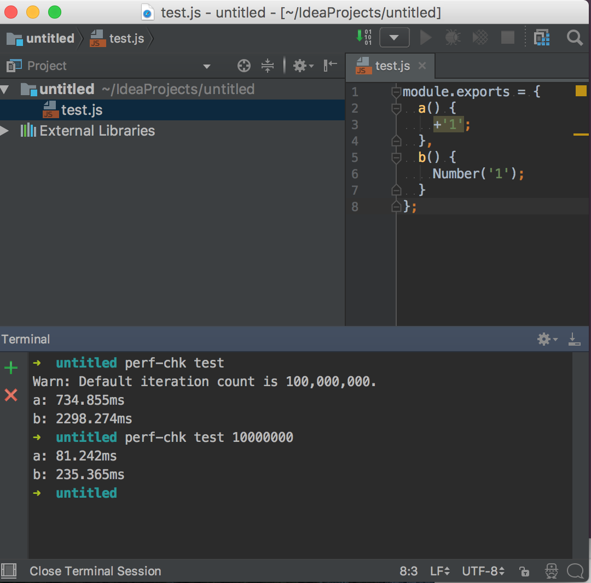

perf-chk (Performance Check)
왜 perf-chk를 만들었나?
나는 코드 실행 시간에 굉장히 관심이 많다.
따라서 코드 실행 시간 측정을 위해 테스트를 종종 해보곤 한다.
그럴 때 아래와 같은 코드를 사용하였다.
하지만 위 코드를 엄청 자주 쓰지 않다보니 암기가 되질 않았다.
따라서 매일 어디선가 복사 붙여넣기 해서 썼다.
또한 함수명, 코드, 반복 횟수를 일일이 바꿔가는 것도 귀찮았다.
이러한 귀찮음을 조금이라도 줄여보고자 perf-chk를 만들게 되었다.
perf-chk는 무엇인가?
Node.js에서 코드의 실행 시간을 측정해주는 CLI 도구이다.
Node.js 어플리케이션이라고 하는 게 맞을라나…?
여튼 내가 짠 코드 중에 어떤 코드가 더 빠른지 알아보고자 할 때 쓰면 된다.
시작하기
perf-chk는 몇몇 ES6 문법들을 사용한다. (const, arrow function)
따라서 Node.js v6.4.0 이상이 설치돼있어야만 한다.
설치
global로 설치하기 (권장)
1npm i -g perf-chklocal로 설치하기
1npm i -D perf-chk
사용법
1. 테스트 할 코드를 생성하자. (모듈)
|
|
참고
- module.exports = {} 는 node.js의 모듈 추출 문법이다.
perf-chk는 node.js 어플리케이션이므로 이 문법을 준수해야만 정상 작동된다. - 함수 문법은 입맛에 맞게 골라쓰면 된다.
2. 실행 시간을 체크하자.
- CLI 도구이므로 터미널을 열자. (윈도우에서는 cmd)
- 명령어를 아래와 같이 치자. 1perf-chk {모듈_이름} [반복_횟수]
만약 local로 설치했다면 아래와 같이 입력하자.
note
모듈_이름은 필수적이고, <파일이름>.js나 <파일이름>과 같이 치면 된다.
반복_횟수는 선택사항이며 기본 값은 100,000,000이다.
반복_횟수는 신뢰할 수 있는 정수(자연수)여야만 하며,
범위는 1 ~ 9,007,199,254,740,991까지다.
만약 코드들의 실행 시간이 모두 비슷하다면 큰 차이가 없는 것이다.
그럼에도 불구하고 코드들 사이의 실행 시간 차이를 알아보고 싶다면
반복 횟수를 늘려가며 실험해보면 된다.
주의사항
- 실행 시간은 매번 동일하지 않다.
이는 컴퓨터 사양에 따라 결과가 달라진다. (CPU, RAM 등등)
또한 동일한 컴퓨터 사양이라고 해서 결과가 모두 같은 건 아니다.
왜냐하면 CPU 사용량과 RAM 사용량이 항상 같은 것은 아니기 때문이다.
따라서 실행 시간은 단순 참고용 정도로만 사용하자. - perf-chk는 Node.js 위에서 돌아간다.
따라서 브라우저 내장 객체인 DOM(Document Object Model, 예를 들면 document.getElementById),
BOM(Browser Object Model, 예를 들면 window.alert)와 같은 걸 지원하지 않는다.
오직 ECMAScript만 테스트 할 수 있다.
Node.js 버전에 따라 ECMAScript 지원율도 다르다.
궁금한 사람은 아래 링크를 참조하자.
Node.js ECMAScript compatibility tables